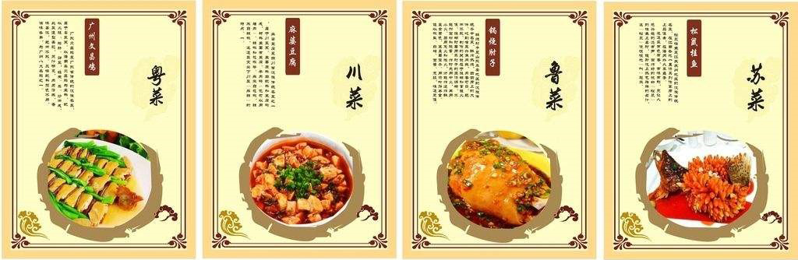

Introduction
The cuisine of Chinese food culture refers to a set of self-contained cooking techniques and flavors formed in a certain area due to the differences in climate, geography, history, production, and dietary restrictions. They are recognized as local dishes. As early as the Spring and Autumn and the Warring States period, the taste of Chinese food in the Chinese food culture showed a difference based on geography. Since the early Qing Dynasty, Shandong Cuisine, Sichuan Cuisine, Cantonese Cuisine, and Jiangsu Cuisine have become the most influential local cuisines at the time and are known as the four major cuisines.
- From left to right: Cantonese Cuisine, Sichuan Cuisine, Shandong Cuisine, Jiangsu Cuisine
